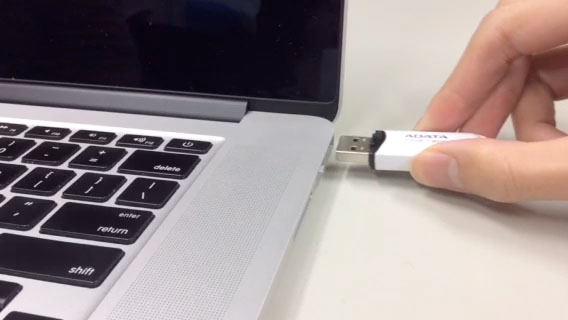

MateriApps LIVE! / はじめの一歩
[English/日本語]
このドキュメントの最新版は https://github.com/cmsi/MateriAppsLive/wiki/GettingStarted にて公開されています.
- インストールされているソフト
- MateriApps LIVE!の起動方法
- MateriApps LIVE!上でのアプリの使用方法
初めての方へ
「2. MateriApps LIVE!の起動方法」に従い起動してください. 操作を誤るとご使用中のOSが上書きされる恐れがあります. 十分ご注意ください.
2. MateriApps LIVE!の起動方法
以下では, USBメモリからブートする方法を説明します. VirtualBoxでの, MateriApps LIVE! OVA版の使い方については、MateriApps LIVE! OVA版をご覧ください.
PCの電源を切った状態でMateriApps LIVE! USBを差し込みます.

ブートデバイスメニューを開きます.
- ブートデバイスメニューを開く方法は, 各PCの環境に依存します. 多くのPCでは, BIOS起動時に画面にブートデバイスメニューを開くためのキー(F2, F12など)の説明が表示されますので, そのキーを押すことで開くことができます.
- Mac OS Xでは, [option (alt)]キーを押し続けることで開きます.
- Mac OS Xでは画像の乱れ及び, ブートが出来ないバージョンが確認されています. 詳細は, https://github.com/cmsi/MateriAppsLive/wiki/KnownProblems, https://github.com/cmsi/MateriAppsLive/wiki/MacBookをご覧ください. また, 上記バージョン以外で起動・未起動の確認をされた場合は, MateriAppsの下にある「お問い合わせ」よりバージョン情報をお知らせください.
ブートデバイスの一覧からUSBメモリを選択し起動します.
MateriApps LIVE!の起動メニューから, 「Live (amd64 LANG=en KBD=jp)」を選択し, [enter]キーを押します. 英語環境, 英語版キーボードをご利用の場合は, amd64 LANG=en, KBD=usを選択してください.
- 「Advanced options」メニュー内のInstall, Graphical installは, 決して選択しないでください . HDDの内容が消去され, 既存の環境がDebian LINUX環境で上書きされてしまいます.

一分程度でDebian/GNU Linuxが起動し, デスクトップ画面があらわれます.
画面左下のメニューから, 「Accessories」-「LXTerminal」を選択します.

各アプリを使用するためのターミナルが起動します.

MateriApps LIVE!の終了は, 画面右下の赤いボタンをクリックし, 「Shutdown」を選択します. ホームディレクトリなどに保存されたファイルはUSBメモリに退避されるので, 次回の起動時にも使うことができます.
3. アプリケーション毎の情報
各アプリのMaterApps LIVE!上での使用方法は, MateriApps LIVE! Wikiの「アプリケーションごとの情報」に記載されています. アプリのより詳細な情報は, MateriAppsの各アプリの説明をご覧ください . ここでは, AkaiKKR, ALPS, BSA, ERmod, feram, Gromacs, HPhi, OpenMX, SMASH, xTAPP & TAPIOCAについて説明します.
AkaiKKR
実行例(Coの例)
/usr/share/akaikkr/in をコピー
cp -rp /usr/share/akaikkr/in .
out ディレクトリと data ディレクトリを作成
mkdir out data
AkaiKKRを実行
specx < in/co
より詳しい情報は MateriApp LIVE! wiki の「AkaiKKRの情報」をご覧ください.
ALPS
- チュートリアル: /usr/share/alps/tutorials にサンプルファイルが格納されています.
実行例 (チュートリアル MC-02 古典MC、looper QMCコードによる磁化率の計算)
チュートリアルをコピー
cp -rp /usr/share/alps/tutorials/mc-02-susceptibilities $HOME
cd $HOME/mc-02-susceptibilities
Pythonスクリプトを順番に実行
python tutorial2a.py
python tutorial2b.py
python tutorial2c.py
python tutorial2d.py
python tutorial2full.py
Pythonスクリプトを実行する毎に結果がプロットされます. プロットウィンドウの右上の×印をクリックしてウィンドウを閉じると, Pythonスクリプトが終了します. 最後のスクリプトを実行すると, それまでの計算結果がまとめてプロットされます.

より詳しい情報は MateriApp LIVE! wiki の「ALPSの情報」をご覧ください.
BSA
- チュートリアル: /usr/share/bsa/Sample にサンプルファイルが格納されています.
サンプルの実行
$ new_bfss /usr/share/bsa/Sample/Ising-square-Binder.dat 1 0.42 1 0.9 1 0.1 > test.op 2>test.log
$ new_bfss -c /usr/share/bsa/Sample/Ising-square-Binder.dat 1 0.42 1 0.9 1 0.1 > test_mc.op 2>test_mc.log
より詳しい情報は、BSA公式ページをご覧ください.
DSQSS
- 実行方法 および 計算例 が公式のwiki に用意されています。
単純なサンプルとして、S=1/2 反強磁性ハイゼンベルグダイマーの計算をおこないます。
（局所）ハミルトニアンを設定
格子+逆温度を設定
D=1次元, L=2, 逆温度beta=10.0
$ lattgene 1 2 10.0
モンテカルロサンプル数などが書かれた入力ファイルの雛形をコピーしてくる
$ cp /usr/share/dsqss/samples/manual_run/qmc.inp.org qmc.inp
計算を実行
$ dla qmc.inp
計算結果（エネルギー）を出力
より詳しい情報は MateriApp LIVE! wiki の「DSQSSの情報」をご覧ください.
ERmod
- チュートリアル: /usr/share/ermod/example/gromacs にサンプルファイルが格納されています.
実行例: 以下では, Gromacs用のサンプル(水中エタノール)の溶媒和自由エネルギーを計算します.
実行用ディレクトリの作成とインプットのコピー
mkdir ermod
cp -r /usr/share/ermod/example/gromacs/* ermod
cd ermod
gen_structure の実行
/usr/share/ermod/tools/gromacs/gen_structure --top etohsolution.top
"Molecule types in topology file: Ethanol SOL" と出て, 溶質はどちらか聞かれるので, Ethanol と入力. soln ディレクトリと refs ディレクトリが出来ます.
溶液系のMDトラジェクトリから溶質ー溶媒間の2体相互作用エネルギー分布を計算
cd soln
/usr/share/ermod/tools/gromacs/gen_input --traj ../solution_run.xtc --log ../solution_run.log
ermod
溶質のMDトラジェクトリから構造を取り出し, テスト粒子として挿入することで, 溶質ー溶媒間のエネルギー分布を計算
cd ../refs
/usr/share/ermod/tools/gromacs/gen_input --traj ../solvent_run.xtc --log ../solvent_run.log --flexible ../solute_run.xtc
ermod
refs の計算はけっこう時間がかかるので, 早めに終わらせたい場合は, parameters_er ファイル中の upljcut = 12, の次の行に maxins = 100 などと書いてください(数字は任意). maxins は溶媒の 1 スナップショットに対する溶質の挿入回数で, デフォルトでは 1000 です. これを減らすことで計算時間は速くなりますが, 精度は落ちます.
溶媒和自由エネルギーの計算 (出力の一番最後が自由エネルギーの最終的な計算結果)
cd ..
slvfe
ERmod の動かし方や理論など、詳細については http://sourceforge.net/p/ermod/wiki/Home/ をご覧ください.
feram
feramは強誘電体の高速分子動力学シミュレーターです．
http://loto.sourceforge.net/feram/ がホームページです．
- /usr/share/feram/example/以下に例題が置かれています．
feramコマンドにはパスが通っています．LXTerminalからferam foo123.feramと実行できます．実行例（数十分のシミュレーションの後，ヒステリシスループを描きます．）
cp -a /usr/share/feram/example/27example-BaTiO3-new-param-E_wave .
cd 27example-BaTiO3-new-param-E_wave
feram 360cos.feram 360sin.feram
./hysteresis.gp
evince hysteresis.eps
Gromacs
- チュートリアル: /usr/share/gromacs/tutor にサンプルファイルが格納されています.
実行例
以下では, 水溶媒中のペプチド分子の分子動力学シミュレーションで, 1) 構造ファイルの作成, 2) 水溶媒の導入, 3) エネルギーー最小化計算, 4) ペプチド分子を固定しての水分子についての分子動力学シミュレーション, 5) 水溶媒中のペプチドの分子動力学シミュレーション(本番), 6) 可視化ソフト ngmx を使用した結果の可視化を順に実行する.
実行用ディレクトリの作成とインプットのコピー
mkdir gromacs
cp -r /usr/share/gromacs/tutor/* gromacs
cd gromacs/gmxdemo
chmod +x demo
デモの実行
./demo
ペプチドの構造データは demo と同じディレクトリの cpeptide.pdb にある. 計算の各段階 のコマンドについてはスクリプト demo を テキストファイルで開く事で確認できる. demo 実行後, 説明にしたがって Enter を押していくとシミュレーションが終了し, 最後に可視化ソフト ngmx の画面が表示される.
可視化ソフト ngmx の操作
プログラムの起動後, 出てきたダイアログボックス内の "Protein" と書かれている箇所のチェックを入れ, OK ボタンをクリック. 系の境界と計算したペプチド分子が表示される. 上部 "Display" メニューの "Animate" を選択. 下にダイアログボックスが出現する. ▶▶ボタンをクリックするとペプチドの動く様子が見られる.
HPhi
- チュートリアル: /usr/share/hphi/samples にサンプルファイルが格納されています.
サンプルの実行: 反強磁性 S=1/2 Heisenberg chain を Lanczos 法で解く
$ cp -rp /usr/share/hphi/samples/Standard/Spin/HeisenbergChain .
$ cd HeisenbergChain
$ HPhi -s StdFace.def
より詳しい情報は、HPhi公式ページをご覧ください.
OpenMX
- チュートリアル: /usr/share/openmx/work にサンプルファイルが格納されています。
実行例
実行用ディレクトリの作成とインプットのコピー
mkdir openmx
cp /usr/share/openmx/work/Methane.dat openmx
cd openmx
OpenMX の実行
openmx Methane.dat
結果の確認
http://www.openmx-square.org/openmx_man3.7/node16.html に掲載されている結果と比較
SMASH
- チュートリアル: /usr/share/smash/example にサンプルファイルが格納されています.
実行例
以下の例では, アントラセン(C14H10)の Hatree-Fock 法(6-31G 基底)によるエネルギー計算と, その HOMO 及び LUMO の可視化を実行します. 可視化には, SMASH に付属するsmash-vtk-generator と, オープンソースソフトウェア ParaView を使用します.
実行用ディレクトリの作成とインプットのコピー
mkdir smash
cd smash
cp /usr/share/smash/example/anthracene.inp .
SMASHの実行
smash < anthracene.inp > anthracene.out
アウトプットファイル anthracene.out とチェックポイントファイル anthracene.chk が生成されます. 計算結果は, アウトプットはテキストファイルで開く事で確認できます. 内容は, 計算条件, 原子座標, 基底関数, SCF 繰り返し計算過程, 軌道エネルギー, 軌道係数です.
表示したい軌道の vtk ファイル(anthracene-HOMO.vtk と anthracene-LUMO.vtk)を作成
smash-vtk-generator anthracene.chk anthracene-HOMO.vtk MO HOMO
smash-vtk-generator anthracene.chk anthracene-LUMO.vtk MO LUMO
- 左下のメニューから ParaView Viewer を起動
- File メニューから Load State を選択し, /usr/share/smash/vtk/mo-view.pvsm を開く.
- 新たに現れたウィンドウで anthracene-HOMO.vtk を開くと, HOMO が表示されます.
- LUMO を表示したいときは, /usr/share/smash/vtk/mo-view.pvsm を開いた後, anthracene-LUMO.vtk を開く
より詳しい情報は MateriApp LIVE! wiki の「SMASHの情報」をご覧ください.
xTAPP & TAPIOCA
- サンプルファイルは, それぞれ下記のディレクトリに格納されています.
- xTAPPのサンプル: /usr/share/xtapp/sample
- TAPIOCAのサンプル: /usr/share/tapioca/sample
実行例
サンプル実行用のディレクトリを作成
mkdir $HOME/xtapp
サンプル用のシェルスクリプトをコピー
cp /usr/share/xtapp/check/* $HOME/xtapp
cd $HOME/xtapp
実行例1: シリコンの計算
si.shを実行し, シリコンの計算を行います.
sh si.sh
実行例2: αクオーツの計算
quartz.shを実行し, αクオーツの計算を行います.
sh quartz.sh
TAPIOCAの起動
TAPIOCAは, コマンドラインからtapiocaと入力するか, 左下のメニューから起動(MateriApps > tapioca)します.

より詳しい情報は MateriApp LIVE! wiki の「xTAPP & TAPIOCAの情報」をご覧ください.